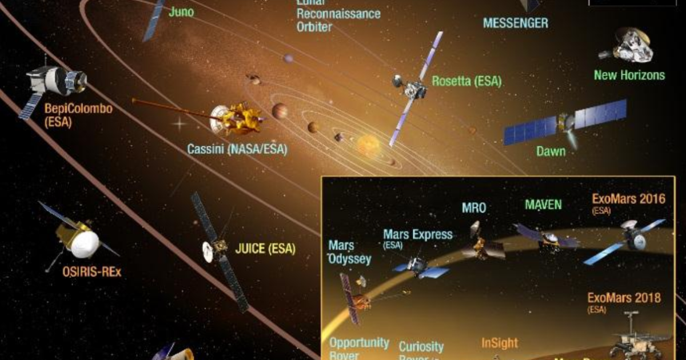
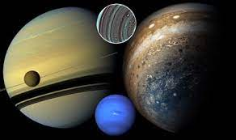
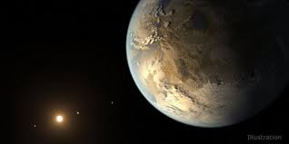

ABOUT The
planetary motion
Planetary science is the scientific study of planets and their planetary systems which includes moons, ring systems, gas clouds, and magnetospheres. It involves understanding how planetary systems formed, how these systems work and how all their components interact. It is a cross-discipline field including aspects of astronomy, atmospheric science, geology, space physics, biology and chemistry.
.
Missions for planetary motions

How It Begins
In more modern times, planetary science began in astronomy, from studies of the unresolved planets. In this sense, the original planetary astronomer would be Galileo, who discovered the four largest moons of Jupiter, the mountains on the Moon, and first observed the rings of Saturn, all objects of intense later study. Galileo's study of the lunar mountains in 1609 also began the study of extraterrestrial landscapes: his observation "that the Moon certainly does not possess a smooth and polished surface" suggested that it and other worlds might appear "just like the face of the Earth itself".[3
The first details of the engineering, design and construction of a space station were described by Herman Noordung, in 1928. He described a “wohnrad” or “living wheel“; a wheel shaped rotating space station. He reasoned that the rotation would be required to create artificial gravity for the crewmembers. He described how it would be assembled first on the ground for testing and then its individual
parts launched by rocket for reassembly in orbit.
Planetary atmoshperic conditions


The International Space Station is an unprecedented achievement in global human endeavors to build and utilize a research platform in space. Since 2000, the station evolved from an outpost into a highly
capable microgravity laboratory.
In its third decade of continuous human presence, the International Space Station has a far-reaching impact as a microgravity lab hosting technology, demonstrations, and scientific investigations
from a range of fields. Results are compounding and new benefits are emerging.